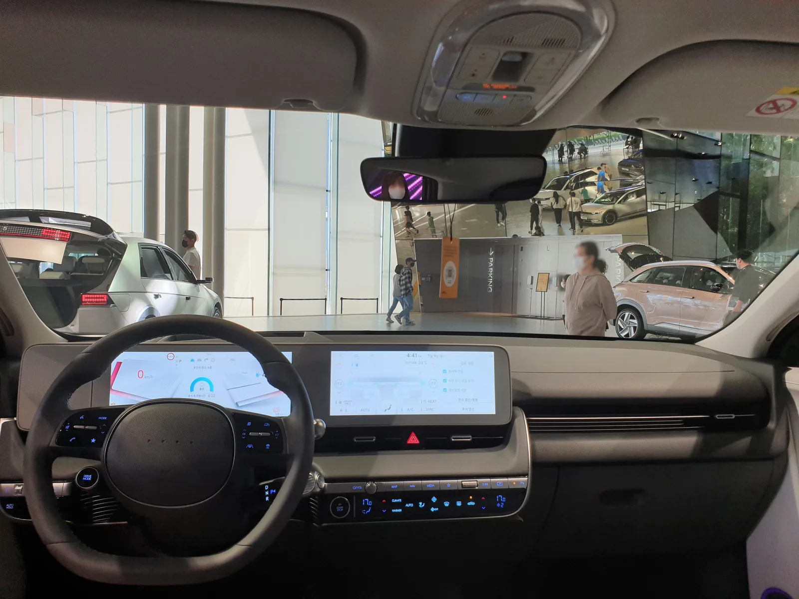

▲ 현대 아이오닉5. 2026년형은 스탠다드 4,740만 원부터 아이오닉5 N까지 라인업이 넓어졌다 ⓒ Wikimedia Commons
현대차 아이오닉5는 국내 전기 SUV 판매 1~2위를 다투는 스테디셀러다. 2026년형은 스탠다드 4,740만 원부터 트랙 전용 아이오닉5 N까지 가격 스펙트럼이 넓어졌고, 800V 아키텍처를 앞세운 급속충전은 여전히 핵심 무기로 꼽힌다. 다만 오너들 사이에서는 "적응이 필요한 부분이 있다"는 목소리도 꾸준히 나온다. 국내외 시승기·오너 후기·공식 가격표를 종합해 아이오닉5의 실제 상품성을 짚어봤다.
1. 트림별 가격 — 스탠다드 4,740만 원부터 아이오닉5 N까지

▲ 아이오닉5 전면 파라메트릭 픽셀 헤드램프. 2026년형에도 디자인 정체성은 그대로 유지됐다 ⓒ Wikimedia Commons
2026년형 아이오닉5는 스탠다드와 롱레인지 두 파워트레인으로 나뉘고, 각각 2WD·AWD 구동방식을 고를 수 있다. 여기에 고성능 아이오닉5 N까지 더하면 사실상 4천만 원대 초반부터 8천만 원대까지 폭넓은 라인업이다.
| 트림 | 배터리 | 가격(개소세 인하분 반영) |
|---|---|---|
| 스탠다드 2WD E-VALUE+ | 63.0kWh | 4,740만 원 |
| 스탠다드 2WD 익스클루시브 | 63.0kWh | 5,030만 원 |
| 롱레인지 2WD E-Lite | 84.0kWh | 5,064만 원 |
| 롱레인지 2WD 익스클루시브 | 84.0kWh | 5,450만 원 |
| 롱레인지 AWD 프레스티지 | 84.0kWh | 5,915만 원 |
| 아이오닉5 N 에센셜 | 84.0kWh(N 전용) | 7,769만 원 |
| 아이오닉5 N | 84.0kWh(N 전용) | 8,029만 원 |
아이오닉5 N은 N 그린 부스트 작동 시 최고출력 650마력, 제로백 3.4초를 낸다. 다만 보조금 혜택이 사실상 없고 트랙 주행에 특화된 모델이라, 일상 주행보다는 극한의 퍼포먼스를 원하는 마니아층 수요가 대부분이라는 게 업계 평가다. 정확한 트림별 옵션 구성과 최신 가격은 현대차 공식 홈페이지에서 확인 가능하다.
2. 800V 급속충전과 실사용 전비

▲ 아이오닉5 실내. 듀얼 12.3인치 디스플레이와 UVO 커넥티드 서비스가 기본 탑재된다 ⓒ Wikimedia Commons
아이오닉5의 상징과도 같은 무기는 800V 멀티 급속충전 시스템이다. 350kW급 초급속 충전기 기준으로 10%에서 80%까지 약 18분이면 채울 수 있다는 게 제조사 발표다. 다만 이는 최적 조건(적정 배터리 온도, 초급속 충전기 이용)에서의 수치이며, 완속충전기나 저온 환경에서는 체감 시간이 늘어난다는 점은 감안해야 한다. 실전비 측면에서는 롱레인지 2WD 기준 복합 전비가 5.0km/kWh 안팎으로 보고되는 사례가 많고, 고속도로 정속 주행에서는 이보다 낮아지는 경향이 있다는 게 오너 커뮤니티의 공통된 경험담이다.
3. 오너들이 꼽는 장단점 — "기어 레버는 반대다"

▲ 아이오닉5 그래비티 골드 색상. 레트로퓨처리즘 디자인은 출시 5년이 지난 지금도 신선하다는 평가가 많다 ⓒ Wikimedia Commons
클리앙·헤이딜러 등에 올라온 오너 후기를 종합하면, 가장 많이 언급되는 강점은 동급 최고 수준의 실내 공간이다. 플랫한 바닥과 슬라이딩 콘솔 덕분에 2열 거주성이 특히 좋다는 평가가 많다. 반면 적응이 필요한 부분으로는 일반적인 배치와 반대 방향인 기어 레버가 꼽힌다. 초기 인수 시 혼동을 겪는 오너가 적지 않다는 것이다. 리어 와이퍼가 없다는 점도 오랫동안 지적된 단점이었으나, 이는 2025년형부터 기본 품목으로 개선됐다. 일부 오너는 고속 주행 중 순간적인 출력 저하나 충전 중 정지 사례를 보고하기도 했는데, 빈도가 높은 고장은 아니지만 참고할 필요는 있다.
알아두면 좋은 정보
아이오닉5는 2025년형부터 리어 와이퍼가 전 트림 기본 탑재로 바뀌었다. 중고차 매물을 볼 때는 연식별 사양 차이를 확인하는 게 좋다.

▲ 국내 도심에서 만난 아이오닉5. 파라메트릭 픽셀 테일램프와 반사형 리어 와이퍼 위치가 잘 드러난다 ⓒ Wikimedia Commons
4. EV6·EV3·모델Y와 비교하면

▲ 아이오닉5 N. 같은 E-GMP 플랫폼을 쓰는 EV6와 달리 박스형 디자인과 넓은 실내가 아이오닉5만의 포지션이다 ⓒ Wikimedia Commons
같은 E-GMP 플랫폼을 공유하는 기아 EV6와 비교하면 방향성이 뚜렷하게 갈린다. 아이오닉5는 복고와 미래 감성이 섞인 박스형 디자인과 넓은 실내 공간이 강점인 반면, EV6는 낮고 날렵한 루프라인에 스포츠 서스펜션을 얹어 주행감성과 핸들링에서 앞선다는 평가가 많다. 동승자를 많이 태우고 편안한 승차감을 우선한다면 아이오닉5, 스포티한 드라이빙을 즐기고 싶다면 EV6를 고르는 게 낫다는 게 공통된 조언이다. 소형 SUV 기아 EV3는 3천만 원대 후반부터 시작하는 가격으로 가성비를 앞세워 아이오닉5의 잠재 구매층 일부를 흡수하고 있고, 테슬라 모델Y는 슈퍼차저 충전 인프라와 브랜드 파워로 수입 전기 SUV 1위 자리를 지키고 있다. 아이오닉5는 이 셋 사이에서 공간·디자인·충전 속도를 앞세운 균형점을 찾는 모델이라 할 수 있다.
5. 정리
구매 체크포인트
- 가격은 스탠다드 4,740만 원부터 시작하며, 실구매를 노린다면 보조금 규모를 먼저 확인해야 한다.
- 800V 급속충전은 여전히 강점이지만, 18분 완충은 초급속 충전기 기준이라는 점을 감안해야 한다.
- 기어 레버 방향 등 초기 적응이 필요한 조작계가 있으니 시승 시 미리 확인하는 게 좋다.
- 주행감성을 중시하면 EV6, 가격을 중시하면 EV3, 브랜드·충전 인프라를 중시하면 모델Y와 최종 비교를 권한다.